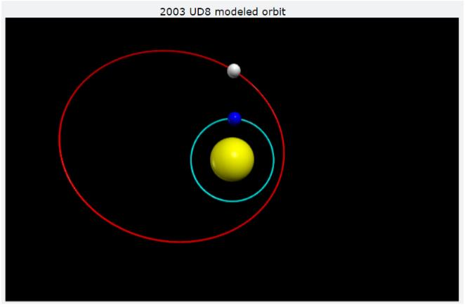

Asteroid orbit determination is integral to protecting Earth and understanding the structure, history, and future of our solar system. In this study, we utilize the Method of Gauss to observe asteroid 2003 UD8 and determine its orbital trajectory. Our calculations from three observation nights rectify that 2003 UD8 is an Amor asteroid of perihelion approach q=1.23 AU, indicating the asteroid does not pose danger for "potentially hazardous" object designation. Furthermore, our orbital determination coincides with low percent error to trajectory analysis of 2003 UD8 by JPL Horizons, and is statistically significant. Using N-body simulation software and 47 test particles, we demonstrate the likely outcome of 2003 UD8 to leave the solar system within the next 8 million years. This was attributable to orbital resonance obtained with Jupiter; however, approximately 27\% of test particles were ejected due to gravitational interactions with Saturn. Performing relative photometry, we determined 2003 UD8 to have an average magnitude of 17.12 across our three observation dates. We also use Monte Carlo statistical simulation methods (n=10,000 iterations), demonstrating their effectiveness for uncertainty calculation instead of extensive error propagation. Specific asteroid selection, observation details, comprehensive data processing, and error analysis are included
The sun, earth, and 2003 UD8 are respectively modeled as yellow, blue, and grey circles. Their paths are traced for one orbit; however, the size of each circle relative to the solar system is not to scale.